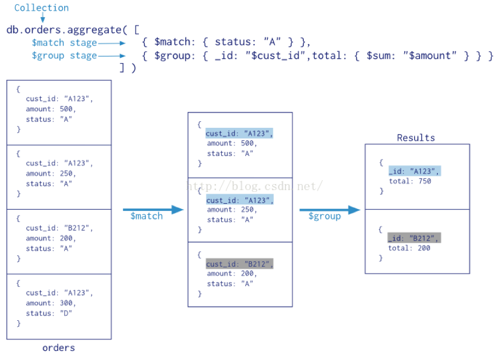

<!DOCTYPE HTML>
<html lang="en" >
    
    <head>
        
        <meta charset="UTF-8">
        <meta http-equiv="X-UA-Compatible" content="IE=edge" />
        <title>MongoDB管道与聚合 | 课程整体概要</title>
        <meta content="text/html; charset=utf-8" http-equiv="Content-Type">
        <meta name="description" content="">
        <meta name="generator" content="GitBook 2.6.7">
        
        
        <meta name="HandheldFriendly" content="true"/>
        <meta name="viewport" content="width=device-width, initial-scale=1, user-scalable=no">
        <meta name="apple-mobile-web-app-capable" content="yes">
        <meta name="apple-mobile-web-app-status-bar-style" content="black">
        <link rel="apple-touch-icon-precomposed" sizes="152x152" href="../gitbook/images/apple-touch-icon-precomposed-152.png">
        <link rel="shortcut icon" href="../gitbook/images/favicon.ico" type="image/x-icon">
        
    <link rel="stylesheet" href="../gitbook/style.css">
    
        
        <link rel="stylesheet" href="../gitbook/plugins/gitbook-plugin-expandable-chapters-small/expandable-chapters-small.css">
        
    
        
        <link rel="stylesheet" href="../gitbook/plugins/gitbook-plugin-highlight/website.css">
        
    
        
        <link rel="stylesheet" href="../gitbook/plugins/gitbook-plugin-search/search.css">
        
    
        
        <link rel="stylesheet" href="../gitbook/plugins/gitbook-plugin-fontsettings/website.css">
        
    
    

        
    
    
    <link rel="next" href="../day07/MongoDB 操作索引.html" />
    
    
    <link rel="prev" href="../day07/MongoDB的高级查询.html" />
    

        
    </head>
    <body>
        
        
    <div class="book"
        data-level="7.2"
        data-chapter-title="MongoDB管道与聚合"
        data-filepath="day07/MongoDB管道与聚合.md"
        data-basepath=".."
        data-revision="Mon Aug 13 2018 21:05:44 GMT+0800 (CST)"
        data-innerlanguage="">
    

<div class="book-summary">
    <nav role="navigation">
        <ul class="summary">
            
            
            
            

            

            
    
        <li class="chapter " data-level="0" data-path="index.html">
            
                
                    <a href="../index.html">
                
                        <i class="fa fa-check"></i>
                        
                        Introduction
                    </a>
            
            
        </li>
    
        <li class="chapter " data-level="1" data-path="day01/课程内容概述.html">
            
                
                    <a href="../day01/课程内容概述.html">
                
                        <i class="fa fa-check"></i>
                        
                            <b>1.</b>
                        
                        第一天
                    </a>
            
            
            <ul class="articles">
                
    
        <li class="chapter " data-level="1.1" data-path="day01/爬虫概述.html">
            
                
                    <a href="../day01/爬虫概述.html">
                
                        <i class="fa fa-check"></i>
                        
                            <b>1.1.</b>
                        
                        爬虫概述
                    </a>
            
            
        </li>
    
        <li class="chapter " data-level="1.2" data-path="day01/爬虫的分类.html">
            
                
                    <a href="../day01/爬虫的分类.html">
                
                        <i class="fa fa-check"></i>
                        
                            <b>1.2.</b>
                        
                        爬虫的分类
                    </a>
            
            
        </li>
    
        <li class="chapter " data-level="1.3" data-path="day01/爬虫工作流程.html">
            
                
                    <a href="../day01/爬虫工作流程.html">
                
                        <i class="fa fa-check"></i>
                        
                            <b>1.3.</b>
                        
                        爬虫工作流程(重点)
                    </a>
            
            
        </li>
    
        <li class="chapter " data-level="1.4" data-path="day01/HTTP与HTTPS.html">
            
                
                    <a href="../day01/HTTP与HTTPS.html">
                
                        <i class="fa fa-check"></i>
                        
                            <b>1.4.</b>
                        
                        复习HTTP与HTTPS
                    </a>
            
            
        </li>
    
        <li class="chapter " data-level="1.5" data-path="day01/字符串复习.html">
            
                
                    <a href="../day01/字符串复习.html">
                
                        <i class="fa fa-check"></i>
                        
                            <b>1.5.</b>
                        
                        字符串复习
                    </a>
            
            
        </li>
    
        <li class="chapter " data-level="1.6" data-path="day01/requests基本使用.html">
            
                
                    <a href="../day01/requests基本使用.html">
                
                        <i class="fa fa-check"></i>
                        
                            <b>1.6.</b>
                        
                        requests基本使用
                    </a>
            
            
        </li>
    
        <li class="chapter " data-level="1.7" data-path="day01/requests发送带有header的请求.html">
            
                
                    <a href="../day01/requests发送带有header的请求.html">
                
                        <i class="fa fa-check"></i>
                        
                            <b>1.7.</b>
                        
                        requests发送带有headers的请求
                    </a>
            
            
        </li>
    
        <li class="chapter " data-level="1.8" data-path="day01/requests发送带有参数的请求.html">
            
                
                    <a href="../day01/requests发送带有参数的请求.html">
                
                        <i class="fa fa-check"></i>
                        
                            <b>1.8.</b>
                        
                        requests发送带有参数的请求
                    </a>
            
            
        </li>
    
        <li class="chapter " data-level="1.9" data-path="day01/贴吧爬虫.html">
            
                
                    <a href="../day01/贴吧爬虫.html">
                
                        <i class="fa fa-check"></i>
                        
                            <b>1.9.</b>
                        
                        贴吧爬虫
                    </a>
            
            
        </li>
    
        <li class="chapter " data-level="1.10" data-path="day01/作业.html">
            
                
                    <a href="../day01/作业.html">
                
                        <i class="fa fa-check"></i>
                        
                            <b>1.10.</b>
                        
                        今日学习目标和作业
                    </a>
            
            
        </li>
    

            </ul>
            
        </li>
    
        <li class="chapter " data-level="2" data-path="day02/课程内容概述.html">
            
                
                    <a href="../day02/课程内容概述.html">
                
                        <i class="fa fa-check"></i>
                        
                            <b>2.</b>
                        
                        第二天
                    </a>
            
            
            <ul class="articles">
                
    
        <li class="chapter " data-level="2.1" data-path="day02/requests发送POST请求.html">
            
                
                    <a href="../day02/requests发送POST请求.html">
                
                        <i class="fa fa-check"></i>
                        
                            <b>2.1.</b>
                        
                        requests发送POST请求
                    </a>
            
            
        </li>
    
        <li class="chapter " data-level="2.2" data-path="day02/百度翻译爬虫.html">
            
                
                    <a href="../day02/百度翻译爬虫.html">
                
                        <i class="fa fa-check"></i>
                        
                            <b>2.2.</b>
                        
                        百度翻译爬虫
                    </a>
            
            
        </li>
    
        <li class="chapter " data-level="2.3" data-path="day02/requests使用代理.html">
            
                
                    <a href="../day02/requests使用代理.html">
                
                        <i class="fa fa-check"></i>
                        
                            <b>2.3.</b>
                        
                        requests使用代理
                    </a>
            
            
        </li>
    
        <li class="chapter " data-level="2.4" data-path="day02/随机代理.html">
            
                
                    <a href="../day02/随机代理.html">
                
                        <i class="fa fa-check"></i>
                        
                            <b>2.4.</b>
                        
                        随机代理
                    </a>
            
            
        </li>
    
        <li class="chapter " data-level="2.5" data-path="day02/requests使用cookie和session.html">
            
                
                    <a href="../day02/requests使用cookie和session.html">
                
                        <i class="fa fa-check"></i>
                        
                            <b>2.5.</b>
                        
                        requests访问登录后才能访问的资源
                    </a>
            
            
        </li>
    
        <li class="chapter " data-level="2.6" data-path="day02/如何找POST请求的URL.html">
            
                
                    <a href="../day02/如何找POST请求的URL.html">
                
                        <i class="fa fa-check"></i>
                        
                            <b>2.6.</b>
                        
                        js逆向-找出POST请求的URL
                    </a>
            
            
        </li>
    
        <li class="chapter " data-level="2.7" data-path="day02/如何定位生成js的位置.html">
            
                
                    <a href="../day02/如何定位生成js的位置.html">
                
                        <i class="fa fa-check"></i>
                        
                            <b>2.7.</b>
                        
                        js逆向-定位和调试js
                    </a>
            
            
        </li>
    
        <li class="chapter " data-level="2.8" data-path="day02/人人手机端登录.html">
            
                
                    <a href="../day02/人人手机端登录.html">
                
                        <i class="fa fa-check"></i>
                        
                            <b>2.8.</b>
                        
                        js逆向-人人手机端登录
                    </a>
            
            
        </li>
    
        <li class="chapter " data-level="2.9" data-path="day02/requests模块其他知识点.html">
            
                
                    <a href="../day02/requests模块其他知识点.html">
                
                        <i class="fa fa-check"></i>
                        
                            <b>2.9.</b>
                        
                        requests模块其他知识点
                    </a>
            
            
        </li>
    
        <li class="chapter " data-level="2.10" data-path="day02/作业.html">
            
                
                    <a href="../day02/作业.html">
                
                        <i class="fa fa-check"></i>
                        
                            <b>2.10.</b>
                        
                        今日学习目标和作业
                    </a>
            
            
        </li>
    
        <li class="chapter " data-level="2.11" data-path="day02/chrome浏览器使用方法介绍.html">
            
                
                    <a href="../day02/chrome浏览器使用方法介绍.html">
                
                        <i class="fa fa-check"></i>
                        
                            <b>2.11.</b>
                        
                        扩展阅读-chrome浏览器使用方法介绍
                    </a>
            
            
        </li>
    
        <li class="chapter " data-level="2.12" data-path="day02/urllib的介绍.html">
            
                
                    <a href="../day02/urllib的介绍.html">
                
                        <i class="fa fa-check"></i>
                        
                            <b>2.12.</b>
                        
                        扩展阅读-urllib的介绍
                    </a>
            
            
        </li>
    
        <li class="chapter " data-level="2.13" data-path="day02/代理神器Fiddler.html">
            
                
                    <a href="../day02/代理神器Fiddler.html">
                
                        <i class="fa fa-check"></i>
                        
                            <b>2.13.</b>
                        
                        扩展阅读-代理神器Fiddler
                    </a>
            
            
        </li>
    

            </ul>
            
        </li>
    
        <li class="chapter " data-level="3" data-path="day03/课程内容概述.html">
            
                
                    <a href="../day03/课程内容概述.html">
                
                        <i class="fa fa-check"></i>
                        
                            <b>3.</b>
                        
                        第三天
                    </a>
            
            
            <ul class="articles">
                
    
        <li class="chapter " data-level="3.1" data-path="day03/数据提取概念与分类.html">
            
                
                    <a href="../day03/数据提取概念与分类.html">
                
                        <i class="fa fa-check"></i>
                        
                            <b>3.1.</b>
                        
                        数据提取概念与分类
                    </a>
            
            
        </li>
    
        <li class="chapter " data-level="3.2" data-path="day03/json数据提取-json概述.html">
            
                
                    <a href="../day03/json数据提取-json概述.html">
                
                        <i class="fa fa-check"></i>
                        
                            <b>3.2.</b>
                        
                        json数据提取-json概述
                    </a>
            
            
        </li>
    
        <li class="chapter " data-level="3.3" data-path="day03/json数据提取-json模块.html">
            
                
                    <a href="../day03/json数据提取-json模块.html">
                
                        <i class="fa fa-check"></i>
                        
                            <b>3.3.</b>
                        
                        json数据提取-json模块
                    </a>
            
            
        </li>
    
        <li class="chapter " data-level="3.4" data-path="day03/豆瓣电影.html">
            
                
                    <a href="../day03/豆瓣电影.html">
                
                        <i class="fa fa-check"></i>
                        
                            <b>3.4.</b>
                        
                        json数据提取-豆瓣电影
                    </a>
            
            
        </li>
    
        <li class="chapter " data-level="3.5" data-path="day03/json数据提取-jsonpath模块.html">
            
                
                    <a href="../day03/json数据提取-jsonpath模块.html">
                
                        <i class="fa fa-check"></i>
                        
                            <b>3.5.</b>
                        
                        json数据提取-jsonpath模块
                    </a>
            
            
        </li>
    
        <li class="chapter " data-level="3.6" data-path="day03/正则表达式.html">
            
                
                    <a href="../day03/正则表达式.html">
                
                        <i class="fa fa-check"></i>
                        
                            <b>3.6.</b>
                        
                        正则表达式
                    </a>
            
            
        </li>
    
        <li class="chapter " data-level="3.7" data-path="day03/36氪练习.html">
            
                
                    <a href="../day03/36氪练习.html">
                
                        <i class="fa fa-check"></i>
                        
                            <b>3.7.</b>
                        
                        36氪练习
                    </a>
            
            
        </li>
    
        <li class="chapter " data-level="3.8" data-path="day03/作业.html">
            
                
                    <a href="../day03/作业.html">
                
                        <i class="fa fa-check"></i>
                        
                            <b>3.8.</b>
                        
                        今日学习目标和作业
                    </a>
            
            
        </li>
    

            </ul>
            
        </li>
    
        <li class="chapter " data-level="4" data-path="day04/课程内容概述.html">
            
                
                    <a href="../day04/课程内容概述.html">
                
                        <i class="fa fa-check"></i>
                        
                            <b>4.</b>
                        
                        第四天
                    </a>
            
            
            <ul class="articles">
                
    
        <li class="chapter " data-level="4.1" data-path="day04/XPATH.html">
            
                
                    <a href="../day04/XPATH.html">
                
                        <i class="fa fa-check"></i>
                        
                            <b>4.1.</b>
                        
                        数据提取-XPATH
                    </a>
            
            
        </li>
    
        <li class="chapter " data-level="4.2" data-path="day04/lxml库.html">
            
                
                    <a href="../day04/lxml库.html">
                
                        <i class="fa fa-check"></i>
                        
                            <b>4.2.</b>
                        
                        数据提取-lxml库
                    </a>
            
            
        </li>
    
        <li class="chapter " data-level="4.3" data-path="day04/贴吧爬虫.html">
            
                
                    <a href="../day04/贴吧爬虫.html">
                
                        <i class="fa fa-check"></i>
                        
                            <b>4.3.</b>
                        
                        数据提取-贴吧爬虫
                    </a>
            
            
        </li>
    
        <li class="chapter " data-level="4.4" data-path="day04/数据提取-BeautifulSoup.html">
            
                
                    <a href="../day04/数据提取-BeautifulSoup.html">
                
                        <i class="fa fa-check"></i>
                        
                            <b>4.4.</b>
                        
                        数据提取-BeautifulSoup
                    </a>
            
            
        </li>
    
        <li class="chapter " data-level="4.5" data-path="day04/糗事百科爬虫.html">
            
                
                    <a href="../day04/糗事百科爬虫.html">
                
                        <i class="fa fa-check"></i>
                        
                            <b>4.5.</b>
                        
                        糗事百科爬虫
                    </a>
            
            
        </li>
    
        <li class="chapter " data-level="4.6" data-path="day04/作业.html">
            
                
                    <a href="../day04/作业.html">
                
                        <i class="fa fa-check"></i>
                        
                            <b>4.6.</b>
                        
                        作业
                    </a>
            
            
        </li>
    
        <li class="chapter " data-level="4.7" data-path="day04/作业讲解_获取上所有电视剧信息.html">
            
                
                    <a href="../day04/作业讲解_获取上所有电视剧信息.html">
                
                        <i class="fa fa-check"></i>
                        
                            <b>4.7.</b>
                        
                        作业答案_获取上所有电视剧信息
                    </a>
            
            
        </li>
    
        <li class="chapter " data-level="4.8" data-path="day04/内涵吧.html">
            
                
                    <a href="../day04/内涵吧.html">
                
                        <i class="fa fa-check"></i>
                        
                            <b>4.8.</b>
                        
                        作业答案_内涵吧爬虫
                    </a>
            
            
        </li>
    
        <li class="chapter " data-level="4.9" data-path="day04/果壳爬虫.html">
            
                
                    <a href="../day04/果壳爬虫.html">
                
                        <i class="fa fa-check"></i>
                        
                            <b>4.9.</b>
                        
                        作业答案_果壳爬虫
                    </a>
            
            
        </li>
    

            </ul>
            
        </li>
    
        <li class="chapter " data-level="5" data-path="day05/课程内容概述.html">
            
                
                    <a href="../day05/课程内容概述.html">
                
                        <i class="fa fa-check"></i>
                        
                            <b>5.</b>
                        
                        第五天
                    </a>
            
            
            <ul class="articles">
                
    
        <li class="chapter " data-level="5.1" data-path="day05/多线程爬虫.html">
            
                
                    <a href="../day05/多线程爬虫.html">
                
                        <i class="fa fa-check"></i>
                        
                            <b>5.1.</b>
                        
                        多线程爬虫
                    </a>
            
            
        </li>
    
        <li class="chapter " data-level="5.2" data-path="day05/多进程爬虫.html">
            
                
                    <a href="../day05/多进程爬虫.html">
                
                        <i class="fa fa-check"></i>
                        
                            <b>5.2.</b>
                        
                        多进程爬虫
                    </a>
            
            
        </li>
    
        <li class="chapter " data-level="5.3" data-path="day05/线程池爬虫.html">
            
                
                    <a href="../day05/线程池爬虫.html">
                
                        <i class="fa fa-check"></i>
                        
                            <b>5.3.</b>
                        
                        线程池爬虫
                    </a>
            
            
        </li>
    
        <li class="chapter " data-level="5.4" data-path="day05/协程池池爬虫.html">
            
                
                    <a href="../day05/协程池池爬虫.html">
                
                        <i class="fa fa-check"></i>
                        
                            <b>5.4.</b>
                        
                        协程池爬虫
                    </a>
            
            
        </li>
    
        <li class="chapter " data-level="5.5" data-path="day05/Selenium概述.html">
            
                
                    <a href="../day05/Selenium概述.html">
                
                        <i class="fa fa-check"></i>
                        
                            <b>5.5.</b>
                        
                        Selenium概述
                    </a>
            
            
        </li>
    
        <li class="chapter " data-level="5.6" data-path="day05/Selenium入门.html">
            
                
                    <a href="../day05/Selenium入门.html">
                
                        <i class="fa fa-check"></i>
                        
                            <b>5.6.</b>
                        
                        Selenium入门
                    </a>
            
            
        </li>
    
        <li class="chapter " data-level="5.7" data-path="day05/Selenium常用方法.html">
            
                
                    <a href="../day05/Selenium常用方法.html">
                
                        <i class="fa fa-check"></i>
                        
                            <b>5.7.</b>
                        
                        Selenium常用方法
                    </a>
            
            
        </li>
    
        <li class="chapter " data-level="5.8" data-path="day05/58租房爬虫.html">
            
                
                    <a href="../day05/58租房爬虫.html">
                
                        <i class="fa fa-check"></i>
                        
                            <b>5.8.</b>
                        
                        58租房爬虫
                    </a>
            
            
        </li>
    
        <li class="chapter " data-level="5.9" data-path="day05/作业.html">
            
                
                    <a href="../day05/作业.html">
                
                        <i class="fa fa-check"></i>
                        
                            <b>5.9.</b>
                        
                        学习目标与作业
                    </a>
            
            
        </li>
    
        <li class="chapter " data-level="5.10" data-path="day05/写爬虫的套路.html">
            
                
                    <a href="../day05/写爬虫的套路.html">
                
                        <i class="fa fa-check"></i>
                        
                            <b>5.10.</b>
                        
                        写爬虫的套路(扩展阅读)
                    </a>
            
            
        </li>
    

            </ul>
            
        </li>
    
        <li class="chapter " data-level="6" data-path="day06/课程内容概述.html">
            
                
                    <a href="../day06/课程内容概述.html">
                
                        <i class="fa fa-check"></i>
                        
                            <b>6.</b>
                        
                        第六天
                    </a>
            
            
            <ul class="articles">
                
    
        <li class="chapter " data-level="6.1" data-path="day06/webdriver等待.html">
            
                
                    <a href="../day06/webdriver等待.html">
                
                        <i class="fa fa-check"></i>
                        
                            <b>6.1.</b>
                        
                        webdriver等待
                    </a>
            
            
        </li>
    
        <li class="chapter " data-level="6.2" data-path="day06/斗鱼爬虫.html">
            
                
                    <a href="../day06/斗鱼爬虫.html">
                
                        <i class="fa fa-check"></i>
                        
                            <b>6.2.</b>
                        
                        斗鱼爬虫
                    </a>
            
            
        </li>
    
        <li class="chapter " data-level="6.3" data-path="day06/如何处理页面在iframe的情况.html">
            
                
                    <a href="../day06/如何处理页面在iframe的情况.html">
                
                        <i class="fa fa-check"></i>
                        
                            <b>6.3.</b>
                        
                        如何处理页面在iframe的情况
                    </a>
            
            
        </li>
    
        <li class="chapter " data-level="6.4" data-path="day06/打码平台的使用.html">
            
                
                    <a href="../day06/打码平台的使用.html">
                
                        <i class="fa fa-check"></i>
                        
                            <b>6.4.</b>
                        
                        打码平台的使用
                    </a>
            
            
        </li>
    
        <li class="chapter " data-level="6.5" data-path="day06/登录豆瓣.html">
            
                
                    <a href="../day06/登录豆瓣.html">
                
                        <i class="fa fa-check"></i>
                        
                            <b>6.5.</b>
                        
                        登录豆瓣
                    </a>
            
            
        </li>
    
        <li class="chapter " data-level="6.6" data-path="day05/常见的反爬手段和解决思路.html">
            
                
                    <a href="../day05/常见的反爬手段和解决思路.html">
                
                        <i class="fa fa-check"></i>
                        
                            <b>6.6.</b>
                        
                        常见的反爬手段和解决思路
                    </a>
            
            
        </li>
    
        <li class="chapter " data-level="6.7" data-path="day07/MongoDB概述.html">
            
                
                    <a href="../day07/MongoDB概述.html">
                
                        <i class="fa fa-check"></i>
                        
                            <b>6.7.</b>
                        
                        MongoDB概述
                    </a>
            
            
        </li>
    
        <li class="chapter " data-level="6.8" data-path="day07/MongoDB安装与配置.html">
            
                
                    <a href="../day07/MongoDB安装与配置.html">
                
                        <i class="fa fa-check"></i>
                        
                            <b>6.8.</b>
                        
                        MongoDB安装与配置
                    </a>
            
            
        </li>
    
        <li class="chapter " data-level="6.9" data-path="day07/MongoDB基础命令.html">
            
                
                    <a href="../day07/MongoDB基础命令.html">
                
                        <i class="fa fa-check"></i>
                        
                            <b>6.9.</b>
                        
                        MongoDB基础命令
                    </a>
            
            
        </li>
    
        <li class="chapter " data-level="6.10" data-path="day07/MongoDB中的数据类型.html">
            
                
                    <a href="../day07/MongoDB中的数据类型.html">
                
                        <i class="fa fa-check"></i>
                        
                            <b>6.10.</b>
                        
                        MongoDB中的数据类型
                    </a>
            
            
        </li>
    
        <li class="chapter " data-level="6.11" data-path="day07/MongoDB数据的增删改查.html">
            
                
                    <a href="../day07/MongoDB数据的增删改查.html">
                
                        <i class="fa fa-check"></i>
                        
                            <b>6.11.</b>
                        
                        MongoDB数据的增删改查
                    </a>
            
            
        </li>
    
        <li class="chapter " data-level="6.12" data-path="day06/作业.html">
            
                
                    <a href="../day06/作业.html">
                
                        <i class="fa fa-check"></i>
                        
                            <b>6.12.</b>
                        
                        学习目标与作业
                    </a>
            
            
        </li>
    
        <li class="chapter " data-level="6.13" data-path="day06/去哪儿手机版反爬处理.html">
            
                
                    <a href="../day06/去哪儿手机版反爬处理.html">
                
                        <i class="fa fa-check"></i>
                        
                            <b>6.13.</b>
                        
                        扩展阅读(字体反爬反爬处理-去哪儿手机版)
                    </a>
            
            
        </li>
    
        <li class="chapter " data-level="6.14" data-path="day06/后续爬虫代码建议.html">
            
                
                    <a href="../day06/后续爬虫代码建议.html">
                
                        <i class="fa fa-check"></i>
                        
                            <b>6.14.</b>
                        
                        扩展阅读(后续爬虫代码建议)
                    </a>
            
            
        </li>
    

            </ul>
            
        </li>
    
        <li class="chapter " data-level="7" data-path="day07/课程内容概述.html">
            
                
                    <a href="../day07/课程内容概述.html">
                
                        <i class="fa fa-check"></i>
                        
                            <b>7.</b>
                        
                        第七天
                    </a>
            
            
            <ul class="articles">
                
    
        <li class="chapter " data-level="7.1" data-path="day07/MongoDB的高级查询.html">
            
                
                    <a href="../day07/MongoDB的高级查询.html">
                
                        <i class="fa fa-check"></i>
                        
                            <b>7.1.</b>
                        
                        MongoDB的高级查询
                    </a>
            
            
        </li>
    
        <li class="chapter active" data-level="7.2" data-path="day07/MongoDB管道与聚合.html">
            
                
                    <a href="../day07/MongoDB管道与聚合.html">
                
                        <i class="fa fa-check"></i>
                        
                            <b>7.2.</b>
                        
                        MongoDB管道与聚合
                    </a>
            
            
        </li>
    
        <li class="chapter " data-level="7.3" data-path="day07/MongoDB 操作索引.html">
            
                
                    <a href="../day07/MongoDB 操作索引.html">
                
                        <i class="fa fa-check"></i>
                        
                            <b>7.3.</b>
                        
                        MongoDB 操作索引
                    </a>
            
            
        </li>
    
        <li class="chapter " data-level="7.4" data-path="day07/MongoDB数据备份与恢复.html">
            
                
                    <a href="../day07/MongoDB数据备份与恢复.html">
                
                        <i class="fa fa-check"></i>
                        
                            <b>7.4.</b>
                        
                        MongoDB数据备份与恢复
                    </a>
            
            
        </li>
    
        <li class="chapter " data-level="7.5" data-path="day07/mongodb的权限管理.html">
            
                
                    <a href="../day07/mongodb的权限管理.html">
                
                        <i class="fa fa-check"></i>
                        
                            <b>7.5.</b>
                        
                        mongodb的权限管理
                    </a>
            
            
        </li>
    
        <li class="chapter " data-level="7.6" data-path="day07/MongoDB和python的交互之pymongo.html">
            
                
                    <a href="../day07/MongoDB和python的交互之pymongo.html">
                
                        <i class="fa fa-check"></i>
                        
                            <b>7.6.</b>
                        
                        MongoDB和python的交互
                    </a>
            
            
        </li>
    
        <li class="chapter " data-level="7.7" data-path="day07/作业.html">
            
                
                    <a href="../day07/作业.html">
                
                        <i class="fa fa-check"></i>
                        
                            <b>7.7.</b>
                        
                        学习目标与作业
                    </a>
            
            
        </li>
    

            </ul>
            
        </li>
    
        <li class="chapter " data-level="8" data-path="day08/00_课程内容概述.html">
            
                
                    <a href="../day08/00_课程内容概述.html">
                
                        <i class="fa fa-check"></i>
                        
                            <b>8.</b>
                        
                        第八天
                    </a>
            
            
            <ul class="articles">
                
    
        <li class="chapter " data-level="8.1" data-path="day08/01_scrapy框的概念.html">
            
                
                    <a href="../day08/01_scrapy框的概念.html">
                
                        <i class="fa fa-check"></i>
                        
                            <b>8.1.</b>
                        
                        [理解]Scrapy的概念
                    </a>
            
            
        </li>
    
        <li class="chapter " data-level="8.2" data-path="day08/02_scrapy框架的工作流程.html">
            
                
                    <a href="../day08/02_scrapy框架的工作流程.html">
                
                        <i class="fa fa-check"></i>
                        
                            <b>8.2.</b>
                        
                        [理解]Scrapy的工作流程
                    </a>
            
            
        </li>
    
        <li class="chapter " data-level="8.3" data-path="day08/03_scrapy框架的安装.html">
            
                
                    <a href="../day08/03_scrapy框架的安装.html">
                
                        <i class="fa fa-check"></i>
                        
                            <b>8.3.</b>
                        
                        [应用]Scrapy的安装
                    </a>
            
            
        </li>
    
        <li class="chapter " data-level="8.4" data-path="day08/04_0_scrapy框架使用入门.html">
            
                
                    <a href="../day08/04_0_scrapy框架使用入门.html">
                
                        <i class="fa fa-check"></i>
                        
                            <b>8.4.</b>
                        
                        [应用]Scrapy入门
                    </a>
            
            
            <ul class="articles">
                
    
        <li class="chapter " data-level="8.4.1" data-path="day08/04_1_创建一个scrapy爬虫项目.html">
            
                
                    <a href="../day08/04_1_创建一个scrapy爬虫项目.html">
                
                        <i class="fa fa-check"></i>
                        
                            <b>8.4.1.</b>
                        
                        [应用]创建一个scrapy爬虫项目
                    </a>
            
            
        </li>
    
        <li class="chapter " data-level="8.4.2" data-path="day08/04_2_生成一个爬虫.html">
            
                
                    <a href="../day08/04_2_生成一个爬虫.html">
                
                        <i class="fa fa-check"></i>
                        
                            <b>8.4.2.</b>
                        
                        [应用]生成一个爬虫(Spider)
                    </a>
            
            
        </li>
    
        <li class="chapter " data-level="8.4.3" data-path="day08/04_3_完善爬虫.html">
            
                
                    <a href="../day08/04_3_完善爬虫.html">
                
                        <i class="fa fa-check"></i>
                        
                            <b>8.4.3.</b>
                        
                        [应用]完善爬虫(Spider)
                    </a>
            
            
        </li>
    
        <li class="chapter " data-level="8.4.4" data-path="day08/04_4_处理保存数据.html">
            
                
                    <a href="../day08/04_4_处理保存数据.html">
                
                        <i class="fa fa-check"></i>
                        
                            <b>8.4.4.</b>
                        
                        [应用]处理保存数据(Pipeline)
                    </a>
            
            
        </li>
    
        <li class="chapter " data-level="8.4.5" data-path="day08/04_5_运行Scrapy项目.html">
            
                
                    <a href="../day08/04_5_运行Scrapy项目.html">
                
                        <i class="fa fa-check"></i>
                        
                            <b>8.4.5.</b>
                        
                        [应用]运行Scrapy项目
                    </a>
            
            
        </li>
    
        <li class="chapter " data-level="8.4.6" data-path="day08/04_6_总结.html">
            
                
                    <a href="../day08/04_6_总结.html">
                
                        <i class="fa fa-check"></i>
                        
                            <b>8.4.6.</b>
                        
                        总结
                    </a>
            
            
        </li>
    

            </ul>
            
        </li>
    
        <li class="chapter " data-level="8.5" data-path="day08/05_腾讯招聘案例.html">
            
                
                    <a href="../day08/05_腾讯招聘案例.html">
                
                        <i class="fa fa-check"></i>
                        
                            <b>8.5.</b>
                        
                        [应用]腾讯招聘案例
                    </a>
            
            
        </li>
    
        <li class="chapter " data-level="8.6" data-path="day08/06_Item类的使用.html">
            
                
                    <a href="../day08/06_Item类的使用.html">
                
                        <i class="fa fa-check"></i>
                        
                            <b>8.6.</b>
                        
                        [应用]Item类的使用
                    </a>
            
            
        </li>
    
        <li class="chapter " data-level="8.7" data-path="day08/07_翻页处理.html">
            
                
                    <a href="../day08/07_翻页处理.html">
                
                        <i class="fa fa-check"></i>
                        
                            <b>8.7.</b>
                        
                        [应用]翻页处理
                    </a>
            
            
        </li>
    
        <li class="chapter " data-level="8.8" data-path="day08/08_详情页处理.html">
            
                
                    <a href="../day08/08_详情页处理.html">
                
                        <i class="fa fa-check"></i>
                        
                            <b>8.8.</b>
                        
                        [应用]详情页处理
                    </a>
            
            
        </li>
    
        <li class="chapter " data-level="8.9" data-path="day08/09_管道的使用.html">
            
                
                    <a href="../day08/09_管道的使用.html">
                
                        <i class="fa fa-check"></i>
                        
                            <b>8.9.</b>
                        
                        [应用]管道的深入使用
                    </a>
            
            
        </li>
    
        <li class="chapter " data-level="8.10" data-path="day08/作业.html">
            
                
                    <a href="../day08/作业.html">
                
                        <i class="fa fa-check"></i>
                        
                            <b>8.10.</b>
                        
                        学习目标与作业
                    </a>
            
            
        </li>
    

            </ul>
            
        </li>
    
        <li class="chapter " data-level="9" data-path="day09/00_课程内容概述.html">
            
                
                    <a href="../day09/00_课程内容概述.html">
                
                        <i class="fa fa-check"></i>
                        
                            <b>9.</b>
                        
                        第九天
                    </a>
            
            
            <ul class="articles">
                
    
        <li class="chapter " data-level="9.1" data-path="day09/01_苏宁易购图书爬虫.html">
            
                
                    <a href="../day09/01_苏宁易购图书爬虫.html">
                
                        <i class="fa fa-check"></i>
                        
                            <b>9.1.</b>
                        
                        [应用]苏宁易购电子书爬虫
                    </a>
            
            
        </li>
    
        <li class="chapter " data-level="9.2" data-path="day09/02_0_scrapy的深入使用.html">
            
                
                    <a href="../day09/02_0_scrapy的深入使用.html">
                
                        <i class="fa fa-check"></i>
                        
                            <b>9.2.</b>
                        
                        [应用]scrapy的深入使用
                    </a>
            
            
            <ul class="articles">
                
    
        <li class="chapter " data-level="9.2.1" data-path="day09/02_1_Scrapy的debug信息.html">
            
                
                    <a href="../day09/02_1_Scrapy的debug信息.html">
                
                        <i class="fa fa-check"></i>
                        
                            <b>9.2.1.</b>
                        
                        [了解]Scrapy的debug信息
                    </a>
            
            
        </li>
    
        <li class="chapter " data-level="9.2.2" data-path="day09/02_2_scrapyShell.html">
            
                
                    <a href="../day09/02_2_scrapyShell.html">
                
                        <i class="fa fa-check"></i>
                        
                            <b>9.2.2.</b>
                        
                        [了解]ScrapyShell
                    </a>
            
            
        </li>
    
        <li class="chapter " data-level="9.2.3" data-path="day09/02_3_settings.py中的设置信息.html">
            
                
                    <a href="../day09/02_3_settings.py中的设置信息.html">
                
                        <i class="fa fa-check"></i>
                        
                            <b>9.2.3.</b>
                        
                        [应用]settings.py中的设置信息
                    </a>
            
            
        </li>
    
        <li class="chapter " data-level="9.2.4" data-path="day09/02_4_深入理解Spider.html">
            
                
                    <a href="../day09/02_4_深入理解Spider.html">
                
                        <i class="fa fa-check"></i>
                        
                            <b>9.2.4.</b>
                        
                        [理解]深入理解Spider
                    </a>
            
            
        </li>
    
        <li class="chapter " data-level="9.2.5" data-path="day09/02_5_ scrapy的深入使用总结.html">
            
                
                    <a href="../day09/02_5_ scrapy的深入使用总结.html">
                
                        <i class="fa fa-check"></i>
                        
                            <b>9.2.5.</b>
                        
                        Scrapy的深入使用总结
                    </a>
            
            
        </li>
    

            </ul>
            
        </li>
    
        <li class="chapter " data-level="9.3" data-path="day09/03_crawlspider类的使用.html">
            
                
                    <a href="../day09/03_crawlspider类的使用.html">
                
                        <i class="fa fa-check"></i>
                        
                            <b>9.3.</b>
                        
                        [应用]crawlspider类的使用
                    </a>
            
            
        </li>
    
        <li class="chapter " data-level="9.4" data-path="day09/作业.html">
            
                
                    <a href="../day09/作业.html">
                
                        <i class="fa fa-check"></i>
                        
                            <b>9.4.</b>
                        
                        学习目标与作业
                    </a>
            
            
        </li>
    

            </ul>
            
        </li>
    
        <li class="chapter " data-level="10" data-path="day10/00_课程内容概述.html">
            
                
                    <a href="../day10/00_课程内容概述.html">
                
                        <i class="fa fa-check"></i>
                        
                            <b>10.</b>
                        
                        第十天
                    </a>
            
            
            <ul class="articles">
                
    
        <li class="chapter " data-level="10.1" data-path="day10/01_豆瓣电影.html">
            
                
                    <a href="../day10/01_豆瓣电影.html">
                
                        <i class="fa fa-check"></i>
                        
                            <b>10.1.</b>
                        
                        [应用]豆瓣电影
                    </a>
            
            
        </li>
    
        <li class="chapter " data-level="10.2" data-path="day10/02_scrapy中间件.html">
            
                
                    <a href="../day10/02_scrapy中间件.html">
                
                        <i class="fa fa-check"></i>
                        
                            <b>10.2.</b>
                        
                        [应用]scrapy中间件
                    </a>
            
            
        </li>
    
        <li class="chapter " data-level="10.3" data-path="day10/03_scrapy模拟登陆.html">
            
                
                    <a href="../day10/03_scrapy模拟登陆.html">
                
                        <i class="fa fa-check"></i>
                        
                            <b>10.3.</b>
                        
                        [应用]scrapy模拟登陆
                    </a>
            
            
        </li>
    
        <li class="chapter " data-level="10.4" data-path="day10/04.小结.html">
            
                
                    <a href="../day10/04.小结.html">
                
                        <i class="fa fa-check"></i>
                        
                            <b>10.4.</b>
                        
                        [理解]scrapy框架小结
                    </a>
            
            
        </li>
    
        <li class="chapter " data-level="10.5" data-path="day10/作业.html">
            
                
                    <a href="../day10/作业.html">
                
                        <i class="fa fa-check"></i>
                        
                            <b>10.5.</b>
                        
                        [理解]学习目标与作业
                    </a>
            
            
        </li>
    

            </ul>
            
        </li>
    
        <li class="chapter " data-level="11" data-path="day11/00_课程内容概述.html">
            
                
                    <a href="../day11/00_课程内容概述.html">
                
                        <i class="fa fa-check"></i>
                        
                            <b>11.</b>
                        
                        第十一天
                    </a>
            
            
            <ul class="articles">
                
    
        <li class="chapter " data-level="11.1" data-path="day11/01_scrapy_redis的概念.html">
            
                
                    <a href="../day11/01_scrapy_redis的概念.html">
                
                        <i class="fa fa-check"></i>
                        
                            <b>11.1.</b>
                        
                        [理解]scrapy_redis的概念
                    </a>
            
            
        </li>
    
        <li class="chapter " data-level="11.2" data-path="day11/02_scrapy_redis实现分布式的原理.html">
            
                
                    <a href="../day11/02_scrapy_redis实现分布式的原理.html">
                
                        <i class="fa fa-check"></i>
                        
                            <b>11.2.</b>
                        
                        [理解]scrapy_redis实现分布式的原理
                    </a>
            
            
        </li>
    
        <li class="chapter " data-level="11.3" data-path="day11/03_Redis简单复习.html">
            
                
                    <a href="../day11/03_Redis简单复习.html">
                
                        <i class="fa fa-check"></i>
                        
                            <b>11.3.</b>
                        
                        [理解]Redis简单复习
                    </a>
            
            
        </li>
    
        <li class="chapter " data-level="11.4" data-path="day11/04_运行domz爬虫.html">
            
                
                    <a href="../day11/04_运行domz爬虫.html">
                
                        <i class="fa fa-check"></i>
                        
                            <b>11.4.</b>
                        
                        [理解]scrapy_redis的例子domz爬虫
                    </a>
            
            
        </li>
    
        <li class="chapter " data-level="11.5" data-path="day11/05_scrapy_redis的源码分析.html">
            
                
                    <a href="../day11/05_scrapy_redis的源码分析.html">
                
                        <i class="fa fa-check"></i>
                        
                            <b>11.5.</b>
                        
                        [理解]scrapy_redis的源码分析
                    </a>
            
            
        </li>
    
        <li class="chapter " data-level="11.6" data-path="day11/06_京东图书爬虫.html">
            
                
                    <a href="../day11/06_京东图书爬虫.html">
                
                        <i class="fa fa-check"></i>
                        
                            <b>11.6.</b>
                        
                        [应用]京东图书爬虫
                    </a>
            
            
        </li>
    
        <li class="chapter " data-level="11.7" data-path="day11/作业.html">
            
                
                    <a href="../day11/作业.html">
                
                        <i class="fa fa-check"></i>
                        
                            <b>11.7.</b>
                        
                        学习目标与作业
                    </a>
            
            
        </li>
    

            </ul>
            
        </li>
    
        <li class="chapter " data-level="12" data-path="day12/00_课程内容概述.html">
            
                
                    <a href="../day12/00_课程内容概述.html">
                
                        <i class="fa fa-check"></i>
                        
                            <b>12.</b>
                        
                        第十二天
                    </a>
            
            
            <ul class="articles">
                
    
        <li class="chapter " data-level="12.1" data-path="day12/01_RedisSpider.html">
            
                
                    <a href="../day12/01_RedisSpider.html">
                
                        <i class="fa fa-check"></i>
                        
                            <b>12.1.</b>
                        
                        [应用]RedisSpider
                    </a>
            
            
        </li>
    
        <li class="chapter " data-level="12.2" data-path="day12/02_RedisCrawlSpider.html">
            
                
                    <a href="../day12/02_RedisCrawlSpider.html">
                
                        <i class="fa fa-check"></i>
                        
                            <b>12.2.</b>
                        
                        [应用]RedisCrawlSpider.
                    </a>
            
            
        </li>
    
        <li class="chapter " data-level="12.3" data-path="day12/03_scrapy_redis_小结.html">
            
                
                    <a href="../day12/03_scrapy_redis_小结.html">
                
                        <i class="fa fa-check"></i>
                        
                            <b>12.3.</b>
                        
                        [应用]scrapy_redis_小结
                    </a>
            
            
        </li>
    
        <li class="chapter " data-level="12.4" data-path="day12/05_爬虫的部署.html">
            
                
                    <a href="../day12/05_爬虫的部署.html">
                
                        <i class="fa fa-check"></i>
                        
                            <b>12.4.</b>
                        
                        [应用]爬虫的部署
                    </a>
            
            
            <ul class="articles">
                
    
        <li class="chapter " data-level="12.4.1" data-path="day12/05_1_scrapyd的使用.html">
            
                
                    <a href="../day12/05_1_scrapyd的使用.html">
                
                        <i class="fa fa-check"></i>
                        
                            <b>12.4.1.</b>
                        
                        [了解]scrapyd的使用
                    </a>
            
            
        </li>
    
        <li class="chapter " data-level="12.4.2" data-path="day12/05_2_pycharm发布代码.html">
            
                
                    <a href="../day12/05_2_pycharm发布代码.html">
                
                        <i class="fa fa-check"></i>
                        
                            <b>12.4.2.</b>
                        
                        [了解]pycharm发布代码
                    </a>
            
            
        </li>
    
        <li class="chapter " data-level="12.4.3" data-path="day12/05_3_crontab实现定时任务.html">
            
                
                    <a href="../day12/05_3_crontab实现定时任务.html">
                
                        <i class="fa fa-check"></i>
                        
                            <b>12.4.3.</b>
                        
                        [了解]crontab实现定时任务
                    </a>
            
            
        </li>
    
        <li class="chapter " data-level="12.4.4" data-path="day12/05_4_爬虫部署小结.html">
            
                
                    <a href="../day12/05_4_爬虫部署小结.html">
                
                        <i class="fa fa-check"></i>
                        
                            <b>12.4.4.</b>
                        
                        爬虫部署小结
                    </a>
            
            
        </li>
    

            </ul>
            
        </li>
    
        <li class="chapter " data-level="12.5" data-path="day12/作业.html">
            
                
                    <a href="../day12/作业.html">
                
                        <i class="fa fa-check"></i>
                        
                            <b>12.5.</b>
                        
                        学习目标与作业
                    </a>
            
            
        </li>
    

            </ul>
            
        </li>
    
        <li class="chapter " data-level="13" data-path="day13/00_爬虫框架介绍.html">
            
                
                    <a href="../day13/00_爬虫框架介绍.html">
                
                        <i class="fa fa-check"></i>
                        
                            <b>13.</b>
                        
                        第十三天-爬虫框架开发
                    </a>
            
            
            <ul class="articles">
                
    
        <li class="chapter " data-level="13.1" data-path="day13/1_0_爬虫框架分析.html">
            
                
                    <a href="../day13/1_0_爬虫框架分析.html">
                
                        <i class="fa fa-check"></i>
                        
                            <b>13.1.</b>
                        
                        [理解]爬虫框架分析
                    </a>
            
            
            <ul class="articles">
                
    
        <li class="chapter " data-level="13.1.1" data-path="day13/1_1_了解框架.html">
            
                
                    <a href="../day13/1_1_了解框架.html">
                
                        <i class="fa fa-check"></i>
                        
                            <b>13.1.1.</b>
                        
                        [了解]了解框架
                    </a>
            
            
        </li>
    
        <li class="chapter " data-level="13.1.2" data-path="day13/1_2_框架设计思路分析.html">
            
                
                    <a href="../day13/1_2_框架设计思路分析.html">
                
                        <i class="fa fa-check"></i>
                        
                            <b>13.1.2.</b>
                        
                        [理解]框架设计思路分析
                    </a>
            
            
        </li>
    
        <li class="chapter " data-level="13.1.3" data-path="day13/1_3_框架代码雏形结构.html">
            
                
                    <a href="../day13/1_3_框架代码雏形结构.html">
                
                        <i class="fa fa-check"></i>
                        
                            <b>13.1.3.</b>
                        
                        [应用]框架代码雏形结构
                    </a>
            
            
        </li>
    

            </ul>
            
        </li>
    
        <li class="chapter " data-level="13.2" data-path="day13/2_0_框架雏形.html">
            
                
                    <a href="../day13/2_0_框架雏形.html">
                
                        <i class="fa fa-check"></i>
                        
                            <b>13.2.</b>
                        
                        [应用]框架雏形
                    </a>
            
            
            <ul class="articles">
                
    
        <li class="chapter " data-level="13.2.1" data-path="day13/2_1_框架雏形--http模块和item模块.html">
            
                
                    <a href="../day13/2_1_框架雏形--http模块和item模块.html">
                
                        <i class="fa fa-check"></i>
                        
                            <b>13.2.1.</b>
                        
                        [应用]http模块和item模块
                    </a>
            
            
        </li>
    
        <li class="chapter " data-level="13.2.2" data-path="day13/2_2_框架雏形--核心模块.html">
            
                
                    <a href="../day13/2_2_框架雏形--核心模块.html">
                
                        <i class="fa fa-check"></i>
                        
                            <b>13.2.2.</b>
                        
                        [应用]核心模块
                    </a>
            
            
        </li>
    
        <li class="chapter " data-level="13.2.3" data-path="day13/2_3_框架安装.html">
            
                
                    <a href="../day13/2_3_框架安装.html">
                
                        <i class="fa fa-check"></i>
                        
                            <b>13.2.3.</b>
                        
                        [应用]框架安装
                    </a>
            
            
        </li>
    
        <li class="chapter " data-level="13.2.4" data-path="day13/2_4_框架运行--main.py.html">
            
                
                    <a href="../day13/2_4_框架运行--main.py.html">
                
                        <i class="fa fa-check"></i>
                        
                            <b>13.2.4.</b>
                        
                        [应用]框架运行--main.py
                    </a>
            
            
        </li>
    
        <li class="chapter " data-level="13.2.5" data-path="day13/2_5_框架雏形--中间件模块.html">
            
                
                    <a href="../day13/2_5_框架雏形--中间件模块.html">
                
                        <i class="fa fa-check"></i>
                        
                            <b>13.2.5.</b>
                        
                        [应用]中间件模块
                    </a>
            
            
        </li>
    

            </ul>
            
        </li>
    
        <li class="chapter " data-level="13.3" data-path="day13/3_0_框架完善.html">
            
                
                    <a href="../day13/3_0_框架完善.html">
                
                        <i class="fa fa-check"></i>
                        
                            <b>13.3.</b>
                        
                        [应用]框架完善
                    </a>
            
            
            <ul class="articles">
                
    
        <li class="chapter " data-level="13.3.1" data-path="day13/3_1_框架完善--日志模块使用.html">
            
                
                    <a href="../day13/3_1_框架完善--日志模块使用.html">
                
                        <i class="fa fa-check"></i>
                        
                            <b>13.3.1.</b>
                        
                        [应用]日志模块使用
                    </a>
            
            
        </li>
    
        <li class="chapter " data-level="13.3.2" data-path="day13/3_2_框架完善--配置文件实现.html">
            
                
                    <a href="../day13/3_2_框架完善--配置文件实现.html">
                
                        <i class="fa fa-check"></i>
                        
                            <b>13.3.2.</b>
                        
                        [应用]配置文件实现
                    </a>
            
            
        </li>
    

            </ul>
            
        </li>
    
        <li class="chapter " data-level="13.4" data-path="day13/作业.html">
            
                
                    <a href="../day13/作业.html">
                
                        <i class="fa fa-check"></i>
                        
                            <b>13.4.</b>
                        
                        学习目标与作业
                    </a>
            
            
        </li>
    

            </ul>
            
        </li>
    
        <li class="chapter " data-level="14" data-path="day14/爬虫框架完善.html">
            
                
                    <a href="../day14/爬虫框架完善.html">
                
                        <i class="fa fa-check"></i>
                        
                            <b>14.</b>
                        
                        第十四天-框架完善
                    </a>
            
            
            <ul class="articles">
                
    
        <li class="chapter " data-level="14.1" data-path="day14/3_框架完善--多爬虫实现之一--多请求.html">
            
                
                    <a href="../day14/3_框架完善--多爬虫实现之一--多请求.html">
                
                        <i class="fa fa-check"></i>
                        
                            <b>14.1.</b>
                        
                        [应用]多爬虫实现之一--多请求
                    </a>
            
            
        </li>
    
        <li class="chapter " data-level="14.2" data-path="day14/4_框架完善--多爬虫实现之二--多个解析函数.html">
            
                
                    <a href="../day14/4_框架完善--多爬虫实现之二--多个解析函数.html">
                
                        <i class="fa fa-check"></i>
                        
                            <b>14.2.</b>
                        
                        [应用]多爬虫实现之二--多个解析函数
                    </a>
            
            
        </li>
    
        <li class="chapter " data-level="14.3" data-path="day14/5_框架完善--多爬虫实现之三--多爬虫文件.html">
            
                
                    <a href="../day14/5_框架完善--多爬虫实现之三--多爬虫文件.html">
                
                        <i class="fa fa-check"></i>
                        
                            <b>14.3.</b>
                        
                        [应用]多爬虫实现之三--多爬虫文件
                    </a>
            
            
        </li>
    
        <li class="chapter " data-level="14.4" data-path="day14/6_框架完善--实现多个管道.html">
            
                
                    <a href="../day14/6_框架完善--实现多个管道.html">
                
                        <i class="fa fa-check"></i>
                        
                            <b>14.4.</b>
                        
                        [应用]实现多个管道
                    </a>
            
            
        </li>
    
        <li class="chapter " data-level="14.5" data-path="day14/7_框架完善--实现多个中间件.html">
            
                
                    <a href="../day14/7_框架完善--实现多个中间件.html">
                
                        <i class="fa fa-check"></i>
                        
                            <b>14.5.</b>
                        
                        [应用]实现多个中间件
                    </a>
            
            
        </li>
    
        <li class="chapter " data-level="14.6" data-path="day14/8_框架完善--实现动态模块导入.html">
            
                
                    <a href="../day14/8_框架完善--实现动态模块导入.html">
                
                        <i class="fa fa-check"></i>
                        
                            <b>14.6.</b>
                        
                        [应用]实现动态模块导入
                    </a>
            
            
        </li>
    
        <li class="chapter " data-level="14.7" data-path="day14/9_框架完善--实现请求去重.html">
            
                
                    <a href="../day14/9_框架完善--实现请求去重.html">
                
                        <i class="fa fa-check"></i>
                        
                            <b>14.7.</b>
                        
                        [应用]实现请求去重
                    </a>
            
            
        </li>
    
        <li class="chapter " data-level="14.8" data-path="day14/10_框架完善--使用线程池实现异步以及并发控制.html">
            
                
                    <a href="../day14/10_框架完善--使用线程池实现异步以及并发控制.html">
                
                        <i class="fa fa-check"></i>
                        
                            <b>14.8.</b>
                        
                        [应用]使用线程池实现异步以及并发控制
                    </a>
            
            
        </li>
    
        <li class="chapter " data-level="14.9" data-path="day14/11_框架完善--使用协程池实现异步以及并发控制.html">
            
                
                    <a href="../day14/11_框架完善--使用协程池实现异步以及并发控制.html">
                
                        <i class="fa fa-check"></i>
                        
                            <b>14.9.</b>
                        
                        [应用]使用协程池实现异步以及并发控制
                    </a>
            
            
        </li>
    
        <li class="chapter " data-level="14.10" data-path="day14/作业.html">
            
                
                    <a href="../day14/作业.html">
                
                        <i class="fa fa-check"></i>
                        
                            <b>14.10.</b>
                        
                        学习目标与作业
                    </a>
            
            
        </li>
    

            </ul>
            
        </li>
    
        <li class="chapter " data-level="15" data-path="day15/0_框架升级.html">
            
                
                    <a href="../day15/0_框架升级.html">
                
                        <i class="fa fa-check"></i>
                        
                            <b>15.</b>
                        
                        第十五天-框架升级
                    </a>
            
            
            <ul class="articles">
                
    
        <li class="chapter " data-level="15.1" data-path="day15/1_框架升级--分布式爬虫设计原理及其实现.html">
            
                
                    <a href="../day15/1_框架升级--分布式爬虫设计原理及其实现.html">
                
                        <i class="fa fa-check"></i>
                        
                            <b>15.1.</b>
                        
                        [应用]分布式爬虫设计原理及其实现
                    </a>
            
            
        </li>
    
        <li class="chapter " data-level="15.2" data-path="day15/2_框架升级--增量爬虫设计原理及其实现.html">
            
                
                    <a href="../day15/2_框架升级--增量爬虫设计原理及其实现.html">
                
                        <i class="fa fa-check"></i>
                        
                            <b>15.2.</b>
                        
                        [应用]增量爬虫设计原理及其实现
                    </a>
            
            
        </li>
    
        <li class="chapter " data-level="15.3" data-path="day15/3_框架升级--断点续爬设计原理及其实现.html">
            
                
                    <a href="../day15/3_框架升级--断点续爬设计原理及其实现.html">
                
                        <i class="fa fa-check"></i>
                        
                            <b>15.3.</b>
                        
                        [应用]断点续爬设计原理及其实现
                    </a>
            
            
        </li>
    
        <li class="chapter " data-level="15.4" data-path="day15/4_0_项目实战.html">
            
                
                    <a href="../day15/4_0_项目实战.html">
                
                        <i class="fa fa-check"></i>
                        
                            <b>15.4.</b>
                        
                        [扩展阅读]项目实战
                    </a>
            
            
            <ul class="articles">
                
    
        <li class="chapter " data-level="15.4.1" data-path="day15/4_1_案例1-scrapy_plus实现腾讯招聘爬虫.html">
            
                
                    <a href="../day15/4_1_案例1-scrapy_plus实现腾讯招聘爬虫.html">
                
                        <i class="fa fa-check"></i>
                        
                            <b>15.4.1.</b>
                        
                        [扩展阅读]scrapy_plus实现腾讯招聘爬虫
                    </a>
            
            
        </li>
    
        <li class="chapter " data-level="15.4.2" data-path="day15/4_2_案例2-scrapy_plus实现新浪新闻爬虫.html">
            
                
                    <a href="../day15/4_2_案例2-scrapy_plus实现新浪新闻爬虫.html">
                
                        <i class="fa fa-check"></i>
                        
                            <b>15.4.2.</b>
                        
                        [扩展阅读]scrapy_plus实现新浪新闻爬虫
                    </a>
            
            
        </li>
    

            </ul>
            
        </li>
    
        <li class="chapter " data-level="15.5" data-path="day15/作业.html">
            
                
                    <a href="../day15/作业.html">
                
                        <i class="fa fa-check"></i>
                        
                            <b>15.5.</b>
                        
                        学习目标与作业
                    </a>
            
            
        </li>
    

            </ul>
            
        </li>
    


            
            <li class="divider"></li>
            <li>
                <a href="https://www.gitbook.com" target="blank" class="gitbook-link">
                    Published with GitBook
                </a>
            </li>
            
        </ul>
    </nav>
</div>

    <div class="book-body">
        <div class="body-inner">
            <div class="book-header" role="navigation">
    <!-- Actions Left -->
    

    <!-- Title -->
    <h1>
        <i class="fa fa-circle-o-notch fa-spin"></i>
        <a href="../" >课程整体概要</a>
    </h1>
</div>

            <div class="page-wrapper" tabindex="-1" role="main">
                <div class="page-inner">
                
                
                    <section class="normal" id="section-">
                    
                        <h2 id="&#x805A;&#x5408;&#x4E0E;&#x7BA1;&#x9053;">&#x805A;&#x5408;&#x4E0E;&#x7BA1;&#x9053;</h2>
<h4 id="&#x805A;&#x5408;-aggregate-&#x6982;&#x5FF5;">&#x805A;&#x5408; aggregate &#x6982;&#x5FF5;</h4>
<ul>
<li>&#x805A;&#x5408;(aggregate)&#x662F;&#x57FA;&#x4E8E;&#x6570;&#x636E;&#x5904;&#x7406;&#x7684;&#x805A;&#x5408;&#x7BA1;&#x9053;&#xFF0C;&#x6BCF;&#x4E2A;&#x6587;&#x6863;&#x901A;&#x8FC7;&#x4E00;&#x4E2A;&#x7531;&#x591A;&#x4E2A;&#x9636;&#x6BB5;&#xFF08;stage&#xFF09;&#x7EC4;&#x6210;&#x7684;&#x7BA1;&#x9053;&#xFF0C;&#x53EF;&#x4EE5;&#x5BF9;&#x6BCF;&#x4E2A;&#x9636;&#x6BB5;&#x7684;&#x7BA1;&#x9053;&#x8FDB;&#x884C;&#x5206;&#x7EC4;&#x3001;&#x8FC7;&#x6EE4;&#x7B49;&#x529F;&#x80FD;&#xFF0C;&#x7136;&#x540E;&#x7ECF;&#x8FC7;&#x4E00;&#x7CFB;&#x5217;&#x7684;&#x5904;&#x7406;&#xFF0C;&#x8F93;&#x51FA;&#x76F8;&#x5E94;&#x7684;&#x7ED3;&#x679C;&#x3002; </li>
<li>&#x8BED;&#x6CD5;: <code>db.&#x96C6;&#x5408;&#x540D;&#x79F0;.aggregate({&#x7BA1;&#x9053;:{&#x8868;&#x8FBE;&#x5F0F;}})</code>
</li>
</ul>
<h4 id="&#x5E38;&#x2F64;&#x7BA1;&#x9053;">&#x5E38;&#x2F64;&#x7BA1;&#x9053;</h4>
<ul>
<li>&#x5728;mongodb&#x4E2D;&#xFF0C;&#x2F42;&#x6863;&#x5904;&#x7406;&#x5B8C;&#x6BD5;&#x540E;&#xFF0C; &#x901A;&#x8FC7;&#x7BA1;&#x9053;&#x8FDB;&#x2F8F;&#x4E0B;&#x2F00;&#x6B21;&#x5904;&#x7406;</li>
<li>&#x5E38;&#x7528;&#x7BA1;&#x9053;&#x5982;&#x4E0B;&#xFF1A;<ul>
<li>$group&#xFF1A; &#x5C06;&#x96C6;&#x5408;&#x4E2D;&#x7684;&#x2F42;&#x6863;&#x5206;&#x7EC4;&#xFF0C; &#x53EF;&#x2F64;&#x4E8E;&#x7EDF;&#x8BA1;&#x7ED3;&#x679C;</li>
<li>$match&#xFF1A; &#x8FC7;&#x6EE4;&#x6570;&#x636E;&#xFF0C; &#x53EA;&#x8F93;&#x51FA;&#x7B26;&#x5408;&#x6761;&#x4EF6;&#x7684;&#x2F42;&#x6863;</li>
<li>$project&#xFF1A; &#x4FEE;&#x6539;&#x8F93;&#x2F0A;&#x2F42;&#x6863;&#x7684;&#x7ED3;&#x6784;&#xFF0C; &#x5982;&#x91CD;&#x547D;&#x540D;&#x3001; &#x589E;&#x52A0;&#x3001; &#x5220;&#x9664;&#x5B57;&#x6BB5;&#x3001; &#x521B;&#x5EFA;&#x8BA1;&#x7B97;&#x7ED3;&#x679C;</li>
<li>$sort&#xFF1A; &#x5C06;&#x8F93;&#x2F0A;&#x2F42;&#x6863;&#x6392;&#x5E8F;&#x540E;&#x8F93;&#x51FA;</li>
<li>$limit&#xFF1A; &#x9650;&#x5236;&#x805A;&#x5408;&#x7BA1;&#x9053;&#x8FD4;&#x56DE;&#x7684;&#x2F42;&#x6863;&#x6570;</li>
<li>$skip&#xFF1A; &#x8DF3;&#x8FC7;&#x6307;&#x5B9A;&#x6570;&#x91CF;&#x7684;&#x2F42;&#x6863;&#xFF0C; &#x5E76;&#x8FD4;&#x56DE;&#x4F59;&#x4E0B;&#x7684;&#x2F42;&#x6863;</li>
<li>$unwind&#xFF1A; &#x5C06;&#x6570;&#x7EC4;&#x7C7B;&#x578B;&#x7684;&#x5B57;&#x6BB5;&#x8FDB;&#x2F8F;&#x62C6;&#x5206;</li>
</ul>
</li>
</ul>
<h4 id="&#x5E38;&#x7528;&#x8868;&#x8FBE;&#x5F0F;&#x7C7B;&#x4F3C;&#x5173;&#x7CFB;&#x6570;&#x636E;&#x4E2D;&#x7684;&#x805A;&#x5408;&#x51FD;&#x6570;">&#x5E38;&#x7528;&#x8868;&#x8FBE;&#x5F0F;(&#x7C7B;&#x4F3C;&#x5173;&#x7CFB;&#x6570;&#x636E;&#x4E2D;&#x7684;&#x805A;&#x5408;&#x51FD;&#x6570;)</h4>
<ul>
<li>&#x5904;&#x7406;&#x8F93;&#x2F0A;&#x2F42;&#x6863;&#x5E76;&#x8F93;&#x51FA;</li>
<li>&#x8BED;&#x6CD5;&#xFF1A;&#x8868;&#x8FBE;&#x5F0F;:&apos;$&#x5217;&#x540D;&apos;</li>
<li>&#x5E38;&#x2F64;&#x8868;&#x8FBE;&#x5F0F;:<ul>
<li>$sum&#xFF1A; &#x8BA1;&#x7B97;&#x603B;&#x548C;&#xFF0C; $sum:1 &#x8868;&#x793A;&#x4EE5;&#x2F00;&#x500D;&#x8BA1;&#x6570;</li>
<li>$avg&#xFF1A; &#x8BA1;&#x7B97;&#x5E73;&#x5747;&#x503C;</li>
<li>$min&#xFF1A; &#x83B7;&#x53D6;&#x6700;&#x2F29;&#x503C;</li>
<li>$max&#xFF1A; &#x83B7;&#x53D6;&#x6700;&#x2F24;&#x503C;</li>
<li>$push&#xFF1A; &#x5728;&#x7ED3;&#x679C;&#x2F42;&#x6863;&#x4E2D;&#x63D2;&#x2F0A;&#x503C;&#x5230;&#x2F00;&#x4E2A;&#x6570;&#x7EC4;&#x4E2D;</li>
<li>$first&#xFF1A; &#x6839;&#x636E;&#x8D44;&#x6E90;&#x2F42;&#x6863;&#x7684;&#x6392;&#x5E8F;&#x83B7;&#x53D6;&#x7B2C;&#x2F00;&#x4E2A;&#x2F42;&#x6863;&#x6570;&#x636E;</li>
<li>$last&#xFF1A; &#x6839;&#x636E;&#x8D44;&#x6E90;&#x2F42;&#x6863;&#x7684;&#x6392;&#x5E8F;&#x83B7;&#x53D6;&#x6700;&#x540E;&#x2F00;&#x4E2A;&#x2F42;&#x6863;&#x6570;&#x636E;</li>
</ul>
</li>
</ul>
<h3 id="&#x683C;&#x5F0F;">&#x683C;&#x5F0F;:</h3>
<pre><code class="lang-js">    db.&#x96C6;&#x5408;.aggregate(
      {&#x7BA1;&#x9053;<span class="hljs-number">1</span>: {}},
      {&#x7BA1;&#x9053;<span class="hljs-number">2</span>: {}}
    )
</code></pre>
<h4 id="&#x805A;&#x5408;&#x4E4B;group">&#x805A;&#x5408;&#x4E4B;$group</h4>
<ul>
<li>&#x5C06;&#x96C6;&#x5408;&#x4E2D;&#x7684;&#x6587;&#x6863;&#x5206;&#x7EC4;, &#x53EF;&#x7528;&#x4E8E;&#x7EDF;&#x8BA1;&#x7ED3;&#x679C;</li>
<li>&#x683C;&#x5F0F;</li>
</ul>
<pre><code>   db.&#x96C6;&#x5408;.aggregate(
      {$group: {_id:&apos;$&#x5206;&#x7EC4;&#x5B57;&#x6BB5;&#x540D;&apos;, &#x663E;&#x793A;&#x5B57;&#x6BB5;:{$&#x7EDF;&#x8BA1;&#x51FD;&#x6570;: &apos;$&#x7EDF;&#x8BA1;&#x5B57;&#x6BB5;&apos;}}},
    )
</code></pre><ul>
<li><p>_id &#x8868;&#x793A;&#x5206;&#x7EC4;&#x7684;&#x4F9D;&#x636E;, &#x4F7F;&#x7528;&#x67D0;&#x5B57;&#x6BB5;&#x7684;&#x683C;&#x5F0F;:<code>&apos;$&#x5B57;&#x6BB5;&apos;</code></p>
</li>
<li><p>&#x4F8B;: &#x7EDF;&#x8BA1;&#x7537;&#x751F;,&#x5973;&#x751F;&#x5404;&#x662F;&#x591A;&#x5C11;</p>
<pre><code class="lang-js">  db.stu.aggregate(
    {$group: {_id:<span class="hljs-string">&apos;$gender&apos;</span>,count:{$sum:<span class="hljs-number">1</span>}}}
  )
</code></pre>
<p><a href="https://docs.mongodb.com/manual/reference/operator/aggregation/group/" target="_blank">group&#x6587;&#x6863;</a></p>
</li>
<li><p>&#x5C06;&#x6574;&#x4E2A;&#x6587;&#x6863;&#x4E3A;&#x4E00;&#x7EC4;, &#x6307;&#x5B9A; <code>id</code> &#x4E3A; <code>null</code></p>
</li>
<li>&#x6C42;&#x5B66;&#x751F;&#x7684;&#x603B;&#x4EBA;&#x6570;&#x548C;&#x5E73;&#x5747;&#x5E74;&#x9F84;</li>
</ul>
<pre><code class="lang-js">  db.stu.aggregate(
    {$group:{_id:<span class="hljs-literal">null</span>,total:{$sum:<span class="hljs-number">1</span>}, avg_age:{$avg:<span class="hljs-string">&apos;$age&apos;</span>} }}
  )
</code></pre>
<h4 id="&#x900F;&#x89C6;&#x6570;&#x636E;-push&#x7EDF;&#x8BA1;&#x51FD;&#x6570;">&#x900F;&#x89C6;&#x6570;&#x636E;: $push&#x7EDF;&#x8BA1;&#x51FD;&#x6570;</h4>
<p>$push: &#x628A;&#x4E0D;&#x540C;&#x5185;&#x5BB9;,&#x653E;&#x5165;&#x4E00;&#x4E2A;&#x6570;&#x7EC4;(&#x5217;&#x8868;)</p>
<ul>
<li><p>&#x7EDF;&#x8BA1;&#x4E0D;&#x540C;&#x6027;&#x522B;&#x7684;&#x5B66;&#x751F;&#x59D3;&#x540D;</p>
<pre><code class="lang-js">db.stu.aggregate(
  {$group:{_id:<span class="hljs-string">&apos;$gender&apos;</span>,name:{$push: <span class="hljs-string">&apos;$name&apos;</span>} }}
)
</code></pre>
</li>
<li><p>&#x4F7F;&#x7528;: $$ROOT&#x628A;&#x8FD9;&#x4E2A;&#x6587;&#x6863;&#x5185;&#x5BB9;&#x52A0;&#x5165;&#x5230;&#x7ED3;&#x679C;&#x96C6;&#x4E2D;</p>
</li>
</ul>
<pre><code class="lang-js">  db.stu.aggregate(
    {$group:{_id:<span class="hljs-string">&apos;$gender&apos;</span>,name:{$push: <span class="hljs-string">&apos;$$ROOT&apos;</span>} }}
  )
</code></pre>
<ul>
<li><p>&#x52A8;&#x624B;&#x7EC3;&#x4E60;</p>
</li>
<li><p>&#x6570;&#x636E;: </p>
<pre><code>db.t2.insert(
  [{ &quot;country&quot; : &quot;china&quot;, &quot;province&quot; : &quot;sh&quot;, &quot;userid&quot; : &quot;a&quot; },  
  {  &quot;country&quot; : &quot;china&quot;, &quot;province&quot; : &quot;sh&quot;, &quot;userid&quot; : &quot;b&quot; },  
  {  &quot;country&quot; : &quot;china&quot;, &quot;province&quot; : &quot;sh&quot;, &quot;userid&quot; : &quot;a&quot; },  
  {  &quot;country&quot; : &quot;china&quot;, &quot;province&quot; : &quot;sh&quot;, &quot;userid&quot; : &quot;c&quot; }, 
  {  &quot;country&quot; : &quot;china&quot;, &quot;province&quot; : &quot;bj&quot;, &quot;userid&quot; : &quot;da&quot; },  
  {  &quot;country&quot; : &quot;china&quot;, &quot;province&quot; : &quot;bj&quot;, &quot;userid&quot; : &quot;fa&quot; }]  
)
</code></pre><ul>
<li>&#x9700;&#x6C42;&#xFF1A;&#x7EDF;&#x8BA1;&#x51FA;&#x6BCF;&#x4E2A;country/province&#x4E0B;&#x7684;userid&#x7684;&#x6570;&#x91CF;&#xFF08;&#x540C;&#x4E00;&#x4E2A;userid&#x53EA;&#x7EDF;&#x8BA1;&#x4E00;&#x6B21;&#xFF09;</li>
</ul>
<pre><code class="lang-js">  db.t2.aggregate(
    {$group:{_id:{country:<span class="hljs-string">&apos;$country&apos;</span>, province:<span class="hljs-string">&apos;$province&apos;</span>,userid:<span class="hljs-string">&apos;$userid&apos;</span>}}},
    {$group:{_id:{country:<span class="hljs-string">&quot;$_id.country&quot;</span>, province:<span class="hljs-string">&apos;$_id.province&apos;</span>}, count:{$sum: <span class="hljs-number">1</span>}}}
  )
</code></pre>
</li>
</ul>
<h4 id="&#x8FC7;&#x6EE4;&#x6570;&#x636E;-match">&#x8FC7;&#x6EE4;&#x6570;&#x636E;: $match</h4>
<ul>
<li>&#x7528;&#x4E8E;&#x8FC7;&#x6EE4;&#x6570;&#x636E;,&#x53EA;&#x8F93;&#x51FA;&#x7B26;&#x5408;&#x6761;&#x4EF6;&#x7684;&#x624D;&#x4F5C;&#x4E3A;&#x8F93;&#x51FA;</li>
<li>$match&#x53EF;&#x4EE5;&#x628A;&#x8FC7;&#x6EE4;&#x540E;&#x7684;&#x6587;&#x6863;,&#x4EA4;&#x7ED9;&#x4E0B;&#x4E00;&#x4E2A;&#x7BA1;&#x9053;,&#x800C;find()&#x4E0D;&#x53EF;&#x4EE5;</li>
<li>&#x8FC7;&#x6EE4;&#x5B57;&#x6BB5;&#x5B57;&#x6BB5;&#x76F4;&#x63A5;&#x5199;, &#x4E0D;&#x80FD;&#x4F7F;&#x7528; &apos;$&#x5B57;&#x6BB5;&#x540D;&apos;&#x7684;&#x5F62;&#x5F0F;</li>
<li>&#x4F8B;1: &#x67E5;&#x8BE2;&#x5E74;&#x9F84;&#x5927;&#x4E8E;20&#x7684;&#x5B66;&#x751F;</li>
</ul>
<pre><code class="lang-js">  db.stu.aggregate(
    {$match:{age:{$gt:<span class="hljs-number">20</span>}}}
  )
</code></pre>
<ul>
<li>&#x67E5;&#x8BE2;&#x5E74;&#x9F84;&#x5927;&#x4E8E;20&#x7684;&#x7537;&#x751F;&#x4E0E;&#x5973;&#x751F;&#x4EBA;&#x6570;</li>
</ul>
<pre><code class="lang-js">  db.stu.aggregate(
    {$match:{age:{$gt:<span class="hljs-number">20</span>}}},
    {$group:{_id:<span class="hljs-string">&apos;$gender&apos;</span>,counter:{$sum:<span class="hljs-number">1</span>}}}
  )
</code></pre>
<h4 id="&#x4FEE;&#x6539;&#x6587;&#x6863;&#x7ED3;&#x6784;-project">&#x4FEE;&#x6539;&#x6587;&#x6863;&#x7ED3;&#x6784; $project</h4>
<ul>
<li>&#x4F5C;&#x7528;: &#x4FEE;&#x6539;&#x8F93;&#x5165;&#x6587;&#x6863;&#x7ED3;&#x6784;, &#x6DFB;&#x52A0;&#x5B57;&#x6BB5;,&#x5220;&#x9664;&#x5B57;&#x6BB5;,&#x91CD;&#x547D;&#x540D;&#x5B57;&#x6BB5;</li>
<li>&#x4F8B;1: &#x67E5;&#x8BE2; &#x53EA;&#x663E;&#x793A;&#x5B66;&#x751F;&#x7684;&#x59D3;&#x540D;,&#x5E74;&#x9F84;</li>
</ul>
<pre><code class="lang-js">  db.stu.aggregate(
    {$project:{_id:<span class="hljs-number">0</span>, name:<span class="hljs-number">1</span>, age: <span class="hljs-number">1</span>}}
  )
</code></pre>
<ul>
<li>&#x4F8B;2: &#x67E5;&#x8BE2;&#x7537;&#x751F;,&#x5973;&#x751F;&#x4EBA;&#x6570;, &#x53EA;&#x8F93;&#x51FA;&#x6027;&#x522B;&#x548C;&#x4EBA;&#x6570;</li>
</ul>
<pre><code class="lang-js">  db.stu.aggregate(
    {$group:{_id:<span class="hljs-string">&apos;$gender&apos;</span>, count:{$sum:<span class="hljs-number">1</span>}}},
    {$project:{_id:<span class="hljs-number">0</span>, gender:<span class="hljs-string">&apos;$_id&apos;</span>, count:<span class="hljs-number">1</span>}}
  )
</code></pre>
<h4 id="&#x52A8;&#x624B;&#x7EC3;&#x4E60;">&#x52A8;&#x624B;&#x7EC3;&#x4E60;</h4>
<ul>
<li><p>&#x6570;&#x636E;(&#x4E0E;&#x4E0A;&#x4E00;&#x6B21;&#x52A8;&#x624B;&#x7EC3;&#x4E60;&#x4E00;&#x6837;): </p>
<pre><code>db.t2.insert(
  [{ &quot;country&quot; : &quot;china&quot;, &quot;province&quot; : &quot;sh&quot;, &quot;userid&quot; : &quot;a&quot; },  
  {  &quot;country&quot; : &quot;china&quot;, &quot;province&quot; : &quot;sh&quot;, &quot;userid&quot; : &quot;b&quot; },  
  {  &quot;country&quot; : &quot;china&quot;, &quot;province&quot; : &quot;sh&quot;, &quot;userid&quot; : &quot;a&quot; },  
  {  &quot;country&quot; : &quot;china&quot;, &quot;province&quot; : &quot;sh&quot;, &quot;userid&quot; : &quot;c&quot; }, 
  {  &quot;country&quot; : &quot;china&quot;, &quot;province&quot; : &quot;bj&quot;, &quot;userid&quot; : &quot;da&quot; },  
  {  &quot;country&quot; : &quot;china&quot;, &quot;province&quot; : &quot;bj&quot;, &quot;userid&quot; : &quot;fa&quot; }]  
)
</code></pre></li>
<li><p>&#x9700;&#x6C42;:</p>
<ul>
<li>&#x7EDF;&#x8BA1;&#x51FA;&#x6BCF;&#x4E2A;country/province&#x4E0B;&#x7684;userid&#x7684;&#x6570;&#x91CF;&#xFF08;&#x540C;&#x4E00;&#x4E2A;userid&#x53EA;&#x7EDF;&#x8BA1;&#x4E00;&#x6B21;&#xFF09;</li>
<li>&#x7ED3;&#x679C;&#x4E2D;&#x7684;&#x5B57;&#x6BB5;&#x4E3A;<code>{country:&quot;**&quot;&#xFF0C;province:&quot;**&quot;&#xFF0C;counter:&quot;*&quot;}</code></li>
</ul>
</li>
</ul>
<pre><code class="lang-js">  db.t2.aggregate(
    {$group:{_id:{country:<span class="hljs-string">&apos;$country&apos;</span>, province:<span class="hljs-string">&apos;$province&apos;</span>,userid:<span class="hljs-string">&apos;$userid&apos;</span>}}},
    {$group:{_id:{country:<span class="hljs-string">&quot;$_id.country&quot;</span>, province:<span class="hljs-string">&apos;$_id.province&apos;</span>}, count:{$sum: <span class="hljs-number">1</span>}}},
    {$project:{_id:<span class="hljs-number">0</span>, country:<span class="hljs-string">&apos;$_id.country&apos;</span>, province:<span class="hljs-string">&apos;$_id.province&apos;</span>, count:<span class="hljs-number">1</span>}}
  )
</code></pre>
<h4 id="&#x805A;&#x5408;&#x4E4B;sort">&#x805A;&#x5408;&#x4E4B;$sort</h4>
<p>- &#x5C06;&#x8F93;&#x5165;&#x7684;&#x6587;&#x6863;&#x6392;&#x5E8F;&#x540E;&#x8F93;&#x51FA;</p>
<ul>
<li><p>&#x4F8B;1: &#x67E5;&#x8BE2;&#x5B66;&#x751F;&#x4FE1;&#x606F;, &#x6309;&#x5E74;&#x9F84;&#x5347;&#x5E8F;&#x6392;&#x5217;</p>
<pre><code class="lang-js">db.stu.aggregate(
  {$sort:{age:<span class="hljs-number">1</span>}}
)
</code></pre>
</li>
<li><p>&#x4F8B;2: &#x67E5;&#x8BE2;&#x7537;&#x751F;&#x548C;&#x5973;&#x751F;&#x4EBA;&#x6570;, &#x6309;&#x4EBA;&#x6570;&#x964D;&#x5E8F;&#x6392;</p>
<pre><code class="lang-js">db.stu.aggregate(
  {$group:{_id:<span class="hljs-string">&apos;$gender&apos;</span>, count:{$sum:<span class="hljs-number">1</span>}}},
  {$sort:{count:-<span class="hljs-number">1</span>}}
)
</code></pre>
</li>
</ul>
<h3 id="&#x805A;&#x5408;-skip-&#x4E0E;-limit">&#x805A;&#x5408;: $skip &#x4E0E; $limit</h3>
<ul>
<li>$skip: &#x8DF3;&#x8FC7;&#x6307;&#x5B9A;&#x6570;&#x91CF;&#x7684;&#x7684;&#x6587;&#x6863;,&#x5E76;&#x8FD4;&#x56DE;&#x5269;&#x4F59;&#x6587;&#x6863;<ul>
<li>&#x4F8B;1: &#x67E5;&#x8BE2;&#x4ECE;&#x7B2C;3&#x6761;&#x5F00;&#x59CB;&#x7684;&#x5B66;&#x751F;&#x4FE1;&#x606F;<pre><code>db.stu.aggregate({$skip:2})
</code></pre></li>
</ul>
</li>
<li><p>$limit: &#x9650;&#x5236;&#x805A;&#x5408;&#x7BA1;&#x9053;&#x8FD4;&#x56DE;&#x7684;&#x6587;&#x6863;&#x6570;&#x91CF;</p>
<ul>
<li>&#x4F8B;2: &#x67E5;&#x8BE2;2&#x6761;&#x5B66;&#x751F;&#x4FE1;&#x606F;</li>
</ul>
<pre><code>db.stu.aggregate({$limit:2})
</code></pre><ul>
<li>&#x4F8B;3: &#x7EDF;&#x8BA1;&#x7537;&#x751F;,&#x5973;&#x751F;&#x4EBA;&#x6570;, &#x6309;&#x4EBA;&#x6570;&#x5347;&#x5E8F;, &#x53D6;&#x51FA;&#x7B2C;&#x4E8C;&#x6761;&#x6570;&#x636E;</li>
</ul>
<pre><code>db.stu.aggregate(
  {$group:{_id:&apos;$gender&apos;, count:{$sum:1}}},
  {$sort:{count:1}},
  {$skip:1},
  {$limit:1}
)
</code></pre></li>
</ul>
<h3 id="&#x805A;&#x5408;-unwind">&#x805A;&#x5408;: $unwind</h3>
<ul>
<li>&#x6982;&#x5FF5;: &#x5C06;&#x2F42;&#x6863;&#x4E2D;&#x7684;&#x67D0;&#x2F00;&#x4E2A;&#x6570;&#x7EC4;&#x7C7B;&#x578B;&#x5B57;&#x6BB5;&#x62C6;&#x5206;&#x6210;&#x591A;&#x6761;&#xFF0C; &#x6BCF;&#x6761;&#x5305;&#x542B;&#x6570;&#x7EC4;&#x4E2D;&#x7684;&#x2F00;&#x4E2A;&#x503C;</li>
<li>&#x8BED;&#x6CD5;: &#x8BED;&#x6CD5;&#xFF1A;db.&#x96C6;&#x5408;&#x540D;&#x79F0;.aggregate({$unwind:&apos;$&#x5B57;&#x6BB5;&#x540D;&#x79F0;&apos;})</li>
<li><p>&#x4E3E;&#x4F8B;:</p>
<ul>
<li>&#x6570;&#x636E;:</li>
</ul>
<pre><code class="lang-js">    db.t3.insert({_id:<span class="hljs-number">1</span>,item:<span class="hljs-string">&apos;t-shirt&apos;</span>,size:[<span class="hljs-string">&apos;S&apos;</span>,<span class="hljs-string">&apos;M&apos;</span>,<span class="hljs-string">&apos;L&apos;</span>]})
</code></pre>
<ul>
<li><p>$unwind &#x5C06;&#x96C6;&#x5408;&#x62C6;&#x5206;</p>
<pre><code class="lang-js">  db.t3.aggregate({$unwind:<span class="hljs-string">&apos;$size&apos;</span>})
</code></pre>
</li>
<li><p>&#x7ED3;&#x679C;&#x5982;&#x4E0B;:</p>
</li>
</ul>
<pre><code class="lang-js">  { <span class="hljs-string">&quot;_id&quot;</span> : <span class="hljs-number">1</span>, <span class="hljs-string">&quot;item&quot;</span> : <span class="hljs-string">&quot;t-shirt&quot;</span>, <span class="hljs-string">&quot;size&quot;</span> : <span class="hljs-string">&quot;S&quot;</span> }
  { <span class="hljs-string">&quot;_id&quot;</span> : <span class="hljs-number">1</span>, <span class="hljs-string">&quot;item&quot;</span> : <span class="hljs-string">&quot;t-shirt&quot;</span>, <span class="hljs-string">&quot;size&quot;</span> : <span class="hljs-string">&quot;M&quot;</span> }
  { <span class="hljs-string">&quot;_id&quot;</span> : <span class="hljs-number">1</span>, <span class="hljs-string">&quot;item&quot;</span> : <span class="hljs-string">&quot;t-shirt&quot;</span>, <span class="hljs-string">&quot;size&quot;</span> : <span class="hljs-string">&quot;L&quot;</span> }
</code></pre>
</li>
<li><p>&#x7EC3;&#x4E60;: &#x6570;&#x636E;&#x5E93;&#x4E2D;&#x6709;&#x4E00;&#x6761;&#x6570;&#x636E;&#xFF1A;{&quot;username&quot;:&quot;Alex&quot;,&quot;tags&quot;: [&apos;C#&apos;,&apos;Java&apos;,&apos;C++&apos;]}&#xFF0C;&#x5982;&#x4F55;&#x83B7;&#x53D6;&#x8BE5;tag&#x5217;&#x8868;&#x7684;&#x957F;&#x5EA6;&#xFF1F;</p>
<pre><code class="lang-js">  db.t4.insert({<span class="hljs-string">&quot;username&quot;</span>:<span class="hljs-string">&quot;Alex&quot;</span>,<span class="hljs-string">&quot;tags&quot;</span>: [<span class="hljs-string">&apos;C#&apos;</span>,<span class="hljs-string">&apos;Java&apos;</span>,<span class="hljs-string">&apos;C++&apos;</span>]})

  db.t4.aggregate(
     {$unwind:<span class="hljs-string">&apos;$tags&apos;</span>},
     {$group: {_id:<span class="hljs-string">&apos;$username&apos;</span>, count:{$sum:<span class="hljs-number">1</span>}}},
     {$project:{_id:<span class="hljs-number">0</span>,username:<span class="hljs-string">&apos;$_id&apos;</span>, count:<span class="hljs-number">1</span>}}
  )
</code></pre>
</li>
<li><p>&#x5728;&#x4F7F;&#x7528;$unwind&#x7684;&#x65F6;&#x5019;, &#x9ED8;&#x8BA4;&#x4F1A;&#x4E22;&#x5F03;&#x5C5E;&#x6027;&#x503C;&#x4E3A;&#x7A7A;&#x7684;&#x6587;&#x6863;. </p>
</li>
<li>&#x5982;&#x679C;&#x5E0C;&#x671B;&#x4FDD;&#x7559;,&#x9700;&#x8981;&#x628A;&#x8BBE;&#x7F6E; <code>preserveNullAndEmptyArrays</code> &#x4E3A;true</li>
<li>&#x683C;&#x5F0F;&#x4E3A;:</li>
</ul>
<pre><code>  db.&#x96C6;&#x5408;&#x540D;.aggregate([
    {$unwind:{
       path:&apos;$&#x5B57;&#x6BB5;&#x540D;&#x79F0;&apos;
       preserveNullAndEmptyArrays:true(&#x4FDD;&#x7559;)/false(&#x4E22;&#x5F03;)
    }
  ])
</code></pre><ul>
<li>&#x9A8C;&#x8BC1;: </li>
<li><p>&#x51C6;&#x5907;&#x6570;&#x636E;</p>
<pre><code class="lang-js">db.t5.insert([
  { <span class="hljs-string">&quot;_id&quot;</span> : <span class="hljs-number">1</span>, <span class="hljs-string">&quot;item&quot;</span> : <span class="hljs-string">&quot;a&quot;</span>, <span class="hljs-string">&quot;size&quot;</span> : [ <span class="hljs-string">&quot;S&quot;</span>, <span class="hljs-string">&quot;M&quot;</span>, <span class="hljs-string">&quot;L&quot;</span> ] },
  { <span class="hljs-string">&quot;_id&quot;</span> : <span class="hljs-number">2</span>, <span class="hljs-string">&quot;item&quot;</span> : <span class="hljs-string">&quot;b&quot;</span>, <span class="hljs-string">&quot;size&quot;</span> : [ ] },
  { <span class="hljs-string">&quot;_id&quot;</span> : <span class="hljs-number">3</span>, <span class="hljs-string">&quot;item&quot;</span> : <span class="hljs-string">&quot;c&quot;</span>, <span class="hljs-string">&quot;size&quot;</span> : <span class="hljs-string">&quot;M&quot;</span> },
  { <span class="hljs-string">&quot;_id&quot;</span> : <span class="hljs-number">4</span>, <span class="hljs-string">&quot;item&quot;</span> : <span class="hljs-string">&quot;d&quot;</span> },
  { <span class="hljs-string">&quot;_id&quot;</span> : <span class="hljs-number">5</span>, <span class="hljs-string">&quot;item&quot;</span> : <span class="hljs-string">&quot;e&quot;</span>, <span class="hljs-string">&quot;size&quot;</span> : <span class="hljs-literal">null</span> }
])
</code></pre>
</li>
<li><p>&#x67E5;&#x8BE2;</p>
</li>
</ul>
<pre><code>  db.t5.aggregate({$unwind:&apos;$size&apos;})
</code></pre><ul>
<li>&#x7ED3;&#x679C;</li>
</ul>
<pre><code class="lang-js">{ <span class="hljs-string">&quot;_id&quot;</span> : <span class="hljs-number">1</span>, <span class="hljs-string">&quot;item&quot;</span> : <span class="hljs-string">&quot;a&quot;</span>, <span class="hljs-string">&quot;size&quot;</span> : <span class="hljs-string">&quot;S&quot;</span> }
{ <span class="hljs-string">&quot;_id&quot;</span> : <span class="hljs-number">1</span>, <span class="hljs-string">&quot;item&quot;</span> : <span class="hljs-string">&quot;a&quot;</span>, <span class="hljs-string">&quot;size&quot;</span> : <span class="hljs-string">&quot;M&quot;</span> }
{ <span class="hljs-string">&quot;_id&quot;</span> : <span class="hljs-number">1</span>, <span class="hljs-string">&quot;item&quot;</span> : <span class="hljs-string">&quot;a&quot;</span>, <span class="hljs-string">&quot;size&quot;</span> : <span class="hljs-string">&quot;L&quot;</span> }
{ <span class="hljs-string">&quot;_id&quot;</span> : <span class="hljs-number">3</span>, <span class="hljs-string">&quot;item&quot;</span> : <span class="hljs-string">&quot;c&quot;</span>, <span class="hljs-string">&quot;size&quot;</span> : <span class="hljs-string">&quot;M&quot;</span> }
</code></pre>
<ul>
<li>&#x8BF4;&#x660E;: 2,4,5 &#x6761;&#x6570;&#x636E;&#x90FD;&#x6CA1;&#x6709;&#x4E86;</li>
<li>&#x8981;&#x663E;&#x793A;,&#x9700;&#x8981;&#x4FDD;&#x62A4;&#x503C;&#x4E3A;null&#x6216;&#x7A7A;&#x6570;&#x7EC4;,&#x5199;&#x6CD5;&#x5982;&#x4E0B;</li>
</ul>
<pre><code class="lang-js">  db.t5.aggregate({
    $unwind:{
      path:<span class="hljs-string">&apos;$size&apos;</span>,
      preserveNullAndEmptyArrays:<span class="hljs-literal">true</span>
      }
    })
</code></pre>
<ul>
<li>&#x603B;&#x7ED3;<ul>
<li>&#x7BA1;&#x9053;&#x4E2D;&#x8BBE;&#x7F6E;&#x90FD;&#x662F;&#x901A;&#x8FC7;&#x5B57;&#x5178;(&#x5BF9;&#x8C61;)&#x8FDB;&#x884C;&#x64CD;&#x4F5C;&#x7684;.</li>
<li>&#x4E0B;&#x4E00;&#x4E2A;&#x7BA1;&#x9053;&#x4F7F;&#x7528;&#x4E0A;&#x4E00;&#x4E2A;&#x7BA1;&#x9053;&#x7684;&#x6570;&#x636E;&#x65F6;&#x5019;, &#x9700;&#x8981;&#x4F7F;&#x7528; &apos;$&#x5B57;&#x6BB5;&#x540D;&apos;</li>
</ul>
</li>
</ul>

                    
                    </section>
                
                
                </div>
            </div>
        </div>

        
        <a href="../day07/MongoDB的高级查询.html" class="navigation navigation-prev " aria-label="Previous page: MongoDB的高级查询"><i class="fa fa-angle-left"></i></a>
        
        
        <a href="../day07/MongoDB 操作索引.html" class="navigation navigation-next " aria-label="Next page: MongoDB 操作索引"><i class="fa fa-angle-right"></i></a>
        
    </div>
</div>

        
<script src="../gitbook/app.js"></script>

    
    <script src="../gitbook/plugins/gitbook-plugin-expandable-chapters-small/expandable-chapters-small.js"></script>
    

    
    <script src="../gitbook/plugins/gitbook-plugin-search/lunr.min.js"></script>
    

    
    <script src="../gitbook/plugins/gitbook-plugin-search/search.js"></script>
    

    
    <script src="../gitbook/plugins/gitbook-plugin-sharing/buttons.js"></script>
    

    
    <script src="../gitbook/plugins/gitbook-plugin-fontsettings/buttons.js"></script>
    

<script>
require(["gitbook"], function(gitbook) {
    var config = {"expandable-chapters-small":{},"highlight":{},"search":{"maxIndexSize":1000000},"sharing":{"facebook":true,"twitter":true,"google":false,"weibo":false,"instapaper":false,"vk":false,"all":["facebook","google","twitter","weibo","instapaper"]},"fontsettings":{"theme":"white","family":"sans","size":2}};
    gitbook.start(config);
});
</script>

        
    </body>
    
</html>
